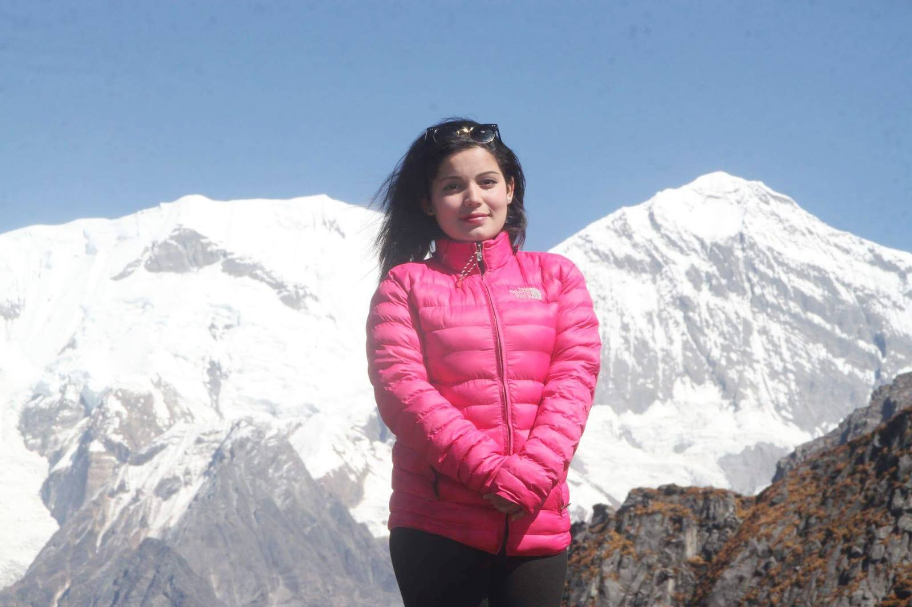
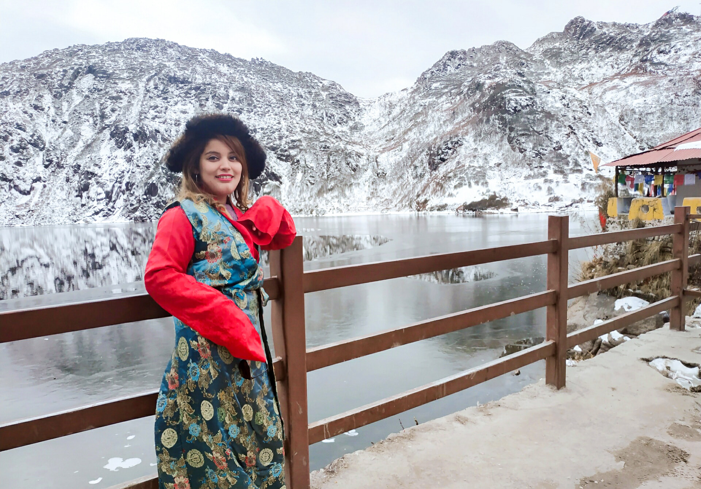

I love Travelling
I am from Nepal. A country full of beauty. Nepal is a blessed country with numerous mountains, lakes, rivers and forests.
We have 8 out of the 14 mountains above 8,000 meters in Nepal. Mount Everest, Kanchenjunga, Lhotse, Makalu, Dhaulagiri, Manaslu, Annapurna, and Cho-Oyu are the eight mountains that are over 8,000 meters.
Macchapuchre Basecamp
I have been to Macchapuchre base camp, which is another beautiful mountain in my hometown.
Sikkim
Sikkim is another beautiful city sharing border with Bhutan, India, and Tibet. This picture below is of Lake lachung wearing traditional costume of the place.
